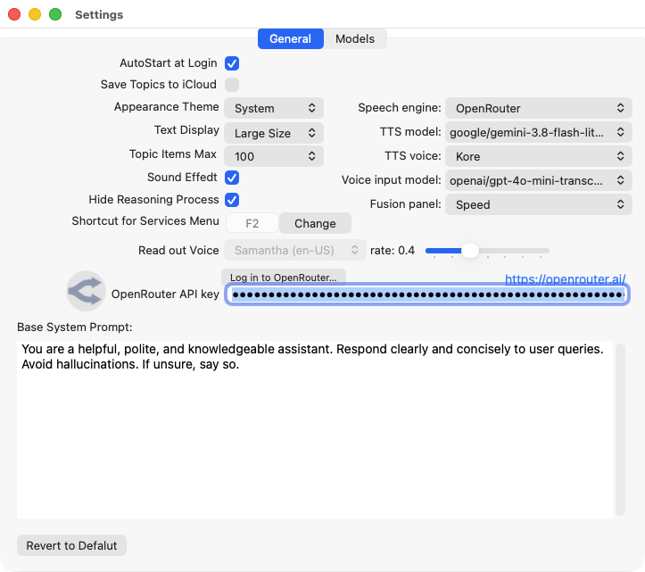
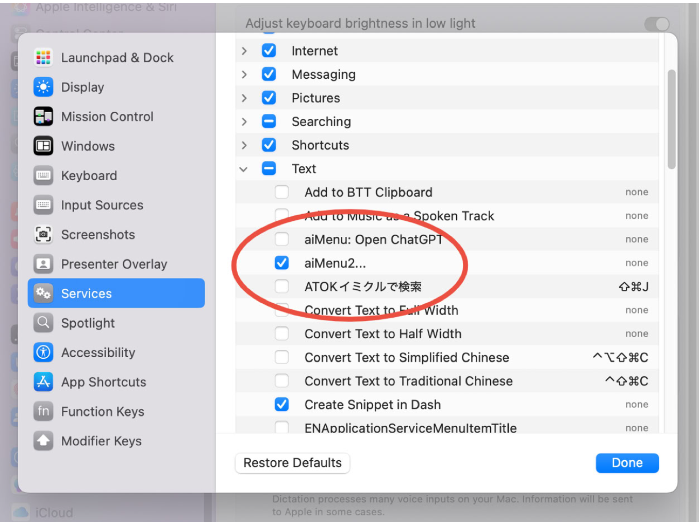
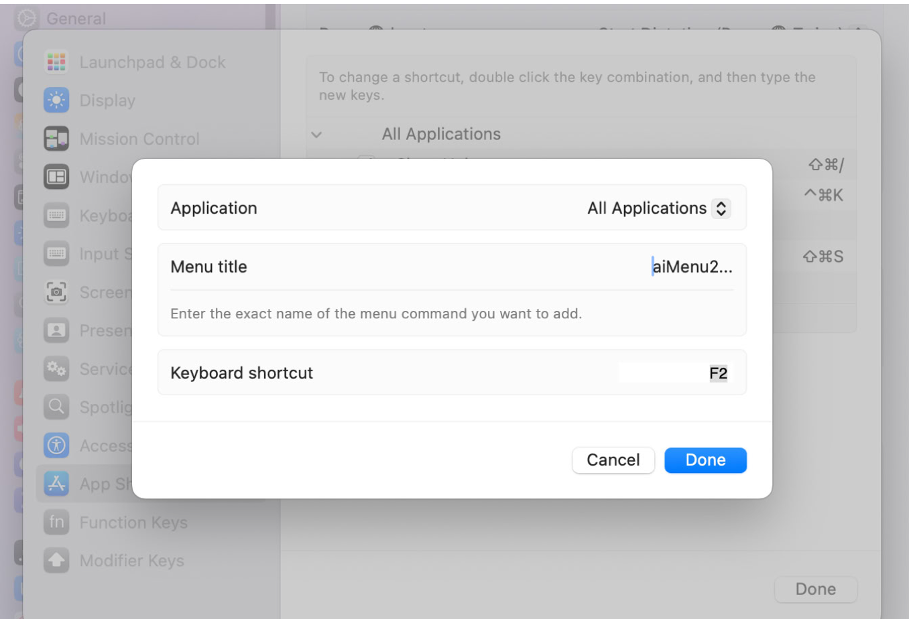
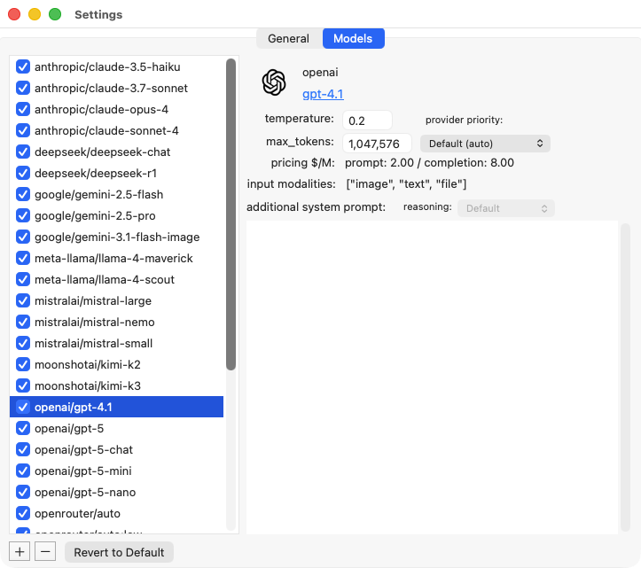
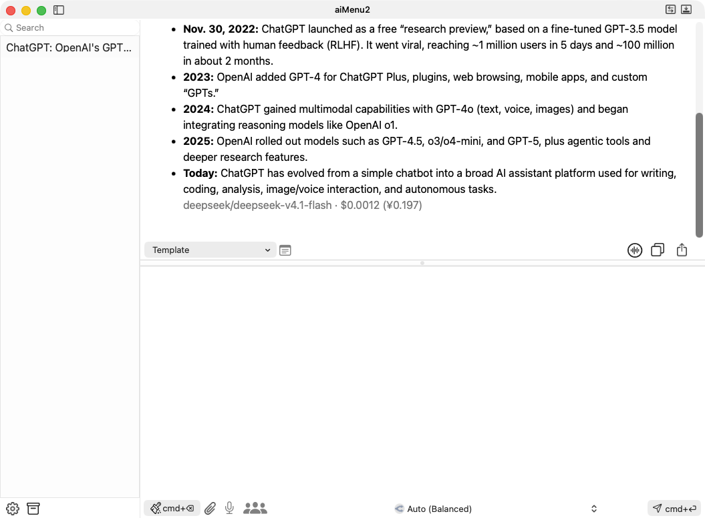
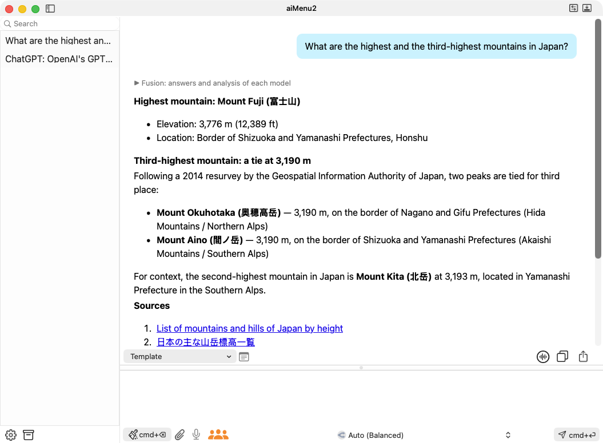
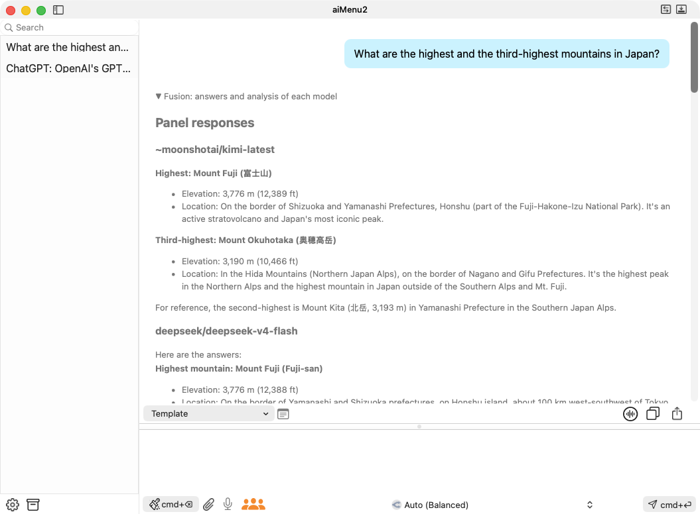
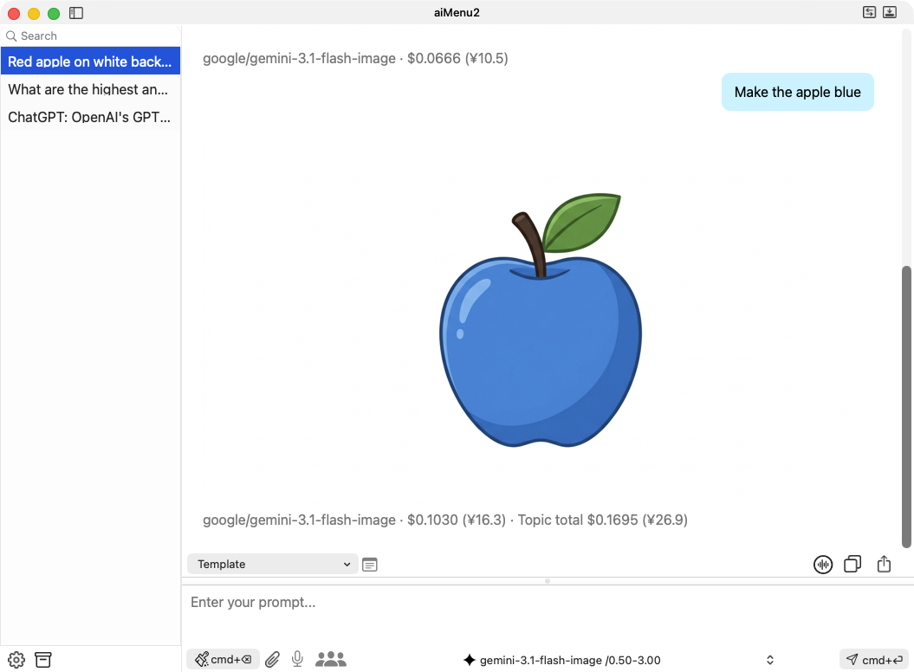
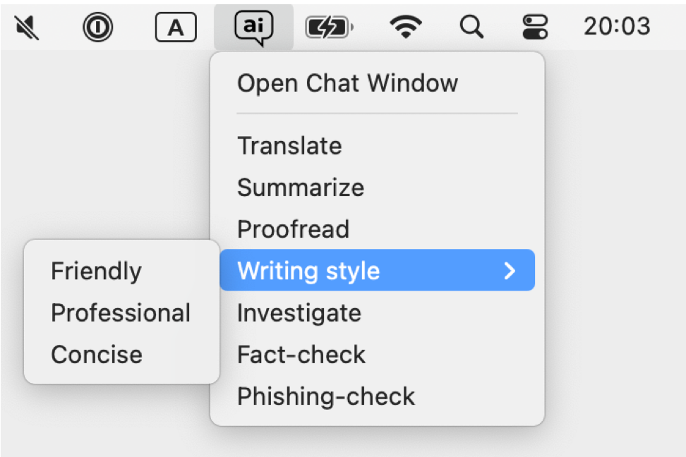
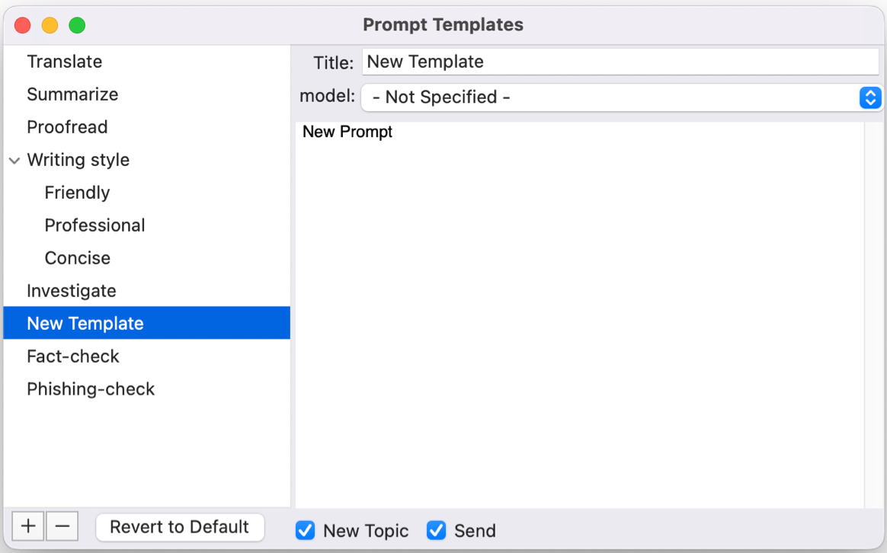

Introduction
Generative AI models such as ChatGPT, Claude, Gemini, Perplexity, DeepSeek, and Grok keep appearing and improving every day. aiMenu2 is an AI assistant that lets you choose the newest and best model for your purpose and budget from more than 300 models, at any time.
From any app, such as Mail, a browser, an editor, or a spreadsheet, you can call aiMenu2's AI menu on the text you select with a single shortcut key. Menus such as “Translate”, “Summarize”, “Proofread”, and “Investigate” are included, and you can add or change them freely.
Features
- More than 300 models: Use ChatGPT, Claude, Gemini, Perplexity, DeepSeek, Grok, and more through OpenRouter. With “Auto”, OpenRouter picks a model for each question.
- Pay only for what you use: AI fees are deducted from your OpenRouter credits for what you use. The cost of each response is shown, so you always know what you spend.
- Works from any app: Select text and press the shortcut key to open the prompt menu.
- Fusion: Several models answer the same question, and the model you selected combines their answers into one.
- Images and voice: Generate and edit images, have responses read aloud with high-quality voices, and enter prompts by voice.
- Rich formatting: Responses are shown with Markdown, syntax highlighting, and math (TeX).
First Steps
After downloading aiMenu2 from the App Store, create an OpenRouter account, buy credits, and log in to OpenRouter from aiMenu2. Then set a shortcut key so that you can call the AI menu from any app.
OpenRouter Account and Credits
aiMenu2 sends AI requests through OpenRouter. With one OpenRouter account, you can use models from many AI providers.
- Open https://openrouter.ai/ in your browser, click “Sign in” at the top right, and choose “Sign up” to create an account. You can also sign up with a Google account and others.
- Open “Credits” from the account menu at the top right and buy credits with “Add Credits”. Credits are prepaid, and only what you use is deducted. About $10 is enough to start.
Logging in to OpenRouter
Open aiMenu2 > Preferences… > General and click “Log in to OpenRouter…” above the API key field. OpenRouter opens in your browser; log in and authorize aiMenu2. When you return to aiMenu2, the API key is set automatically.

You can also create an API key yourself on OpenRouter's Keys page and paste it into the API key field.
Setting a Shortcut Key
Select text in another app, right-click it (or click while holding control), and choose “aiMenu2...” in the Services menu to open aiMenu2's prompt menu. If you assign a shortcut key to this Services menu item, you can open the menu just by pressing the key.
1. Turn on the Services menu item: Open System Settings > Keyboard > Keyboard Shortcuts… > Services, and turn on “aiMenu2...” under “Text”.

2. Assign a shortcut key: In the same window, select “App Shortcuts” and click “+”. Leave “Application” set to “All Applications”, enter aiMenu2... as the “Menu title”, and assign the key you want (F2 in this example) as the “Keyboard shortcut”. The menu title must match the Services menu item exactly, so type three periods.

The assigned key appears in “Shortcut for Services Menu” in aiMenu2's General settings. Click “Change” next to it to open the keyboard shortcuts in System Settings.
More convenient ways: If your mouse has extra buttons, assign aiMenu2's shortcut key to one of them to open the prompt menu with a single click. With a trackpad, a utility such as BetterTouchTool lets you assign it to a gesture, such as a three-finger tap.
Subscription
aiMenu2 is available as a monthly or yearly subscription. You can try it free for 7 days after installing it.
After 7 days, subscription information appears at startup. You can keep using the app without subscribing, but you will be asked to subscribe after each AI response. You can also subscribe from aiMenu2 > License.
AI usage fees are deducted from your OpenRouter credits, separately from the subscription.
Settings
Choose aiMenu2 > Preferences…, or click the gear button at the bottom left of the chat window, to open the settings. There are two tabs: General and Models.
General
The General tab sets how aiMenu2 works overall (see the screenshot in the previous section). “Revert to Default” restores the initial settings.
- AutoStart at Login / Save Topics to iCloud
- Choose whether to start aiMenu2 when you log in, and whether to save your conversation history in iCloud Drive to share it between Macs.
- Appearance Theme, Text Display, Topic Items Max, Sound Effect
- Set light or dark appearance, text size, the number of topics to keep, and sound effects.
- Hide Reasoning Process
- Hides the thinking process that reasoning models show before the answer.
- Speech engine, TTS model, TTS voice
- Choose macOS voices or high-quality OpenRouter voices for reading responses aloud. With OpenRouter, you can also choose the model and voice. With macOS, choose the voice and speed (rate) under “Read out Voice”.
- Voice input model
- Chooses the model that turns your voice into text.
- Fusion panel
- Chooses which models answer in Fusion. “Quality” uses larger models; “Speed” uses lighter models that answer faster and cheaper.
- OpenRouter API key
- Set automatically by “Log in to OpenRouter…”. Click https://openrouter.ai/ on the right to open OpenRouter's site.
- Base System Prompt
- Text that tells the AI in advance how to answer and what role to play. It is sent with every request, together with the model's additional system prompt.
Models
The Models tab chooses which models appear in the chat window's model menu, and sets options for each model. Select a model in the list on the left to see its details on the right.

- temperature
- Controls how varied the answers are. Values near 0 give consistent, predictable answers; values near 1 give more creative and varied answers.
- max_tokens
- The maximum length of one response. Tokens are chunks of words or symbols; one English word is about 1–2 tokens. If the limit is reached, the response is cut off and a warning appears at the end.
- pricing $/M
- The price per million tokens, for input (prompt) and output (completion).
- input modalities
- The kinds of data you can send to the model. You can attach images to models that list image. PDFs can be attached to any model.
- provider priority
- When several providers offer the same model, chooses which to prefer (Default, Lowest price, Fastest output, or Lowest latency).
- reasoning
- Sets how deeply a reasoning model thinks (Default, None, Low, Medium, High, or Max). It is disabled for models that do not support reasoning.
- additional system prompt
- A system prompt sent only to this model.
Auto: “openrouter/auto:low”, “openrouter/auto:medium”, and “openrouter/auto:max” in the list appear in the chat window as “Auto (Budget)”, “Auto (Balanced)”, and “Auto (Best)”. OpenRouter picks a suitable model for each question.
Adding and removing models: Click “+” at the bottom left to open the list of models offered by OpenRouter and add them to aiMenu2. Select a model and click “−” to remove it.
Using the Chat Window
Start aiMenu2 or choose File > Open Chat Window to open the chat window. It has three parts: the topic view on the left, the response view at the top right, and the prompt view at the bottom right. Drag the borders to resize them.

Prompt View
Type your question (prompt) in the prompt view, choose a model from the menu at the bottom, and click the “cmd+↩” button at the bottom right to send it to the AI. You can also press cmd+↩, or press return twice.
Click the “cmd+⌫” button at the bottom left to start a new topic and clear the context of the conversation. Until you do, the AI remembers the earlier questions and answers in the same topic. You can also press cmd+⌫.
The buttons at the bottom do the following:
- Paper clip: Attaches an image or PDF. Click it and drop a file on the drop area that appears. Images work with models that support images; PDFs work with any model.
- Microphone: Starts voice input (see Voice Input).
- People icon (Fusion): When orange, your next questions use Fusion (see Fusion).
Voice Input
- Click the microphone button, or press the control key twice, to start recording. The button turns into a red waveform.
- Two seconds after you stop speaking, that part is turned into text and added to the prompt, and recording continues.
- While recording, click anywhere in the window or press control once to split right away.
- Double-click or press control twice to stop recording.
The first time, macOS asks for permission to use the microphone. You can also allow it in System Settings > Privacy & Security > Microphone.
Response View
AI responses appear here. Each response ends with the name of the model that answered and the cost of the request in dollars and yen. From the second response in a topic, the topic total is shown too.
When a model such as Perplexity searches the web, the numbers such as [1] and [2] in the text link to the sources, which are also listed under “Sources” at the end of the response.
The buttons at the top right of the response view do the following:
- Read aloud: When on, responses are read aloud. Click it while reading to stop.
- Copy: Copies the conversation to the clipboard.
- Share: Opens a save dialog to save the conversation as a PDF file.
Choose a prompt template from “Template” at the top left to run it (see Prompt Templates). Hold shift while choosing to put the template in the prompt view without running it.
Fusion (Ask Several AIs)
Turn the people icon orange and ask a question, and several models answer it while searching the web. An analyst model compares their answers, and the model you selected combines them into one response. Fusion suits important questions and questions where opinions may differ.

Click “▶ Fusion: answers and analysis of each model” at the top of the response to see each model's answer and the analysis of where they agree and differ.

- Choose which models answer with “Fusion panel” in the General settings.
- Because several models are asked, Fusion costs about 4–5 times as much as a normal request, and a response can take a minute or two.
- Write
{{fusion}}in a template to use Fusion for that template only.
Generating and Editing Images
Add and select a model that can generate images (for example, google/gemini-3.1-flash-image) in the Models settings, and ask it to “draw ...”. The image appears in the response. Then ask for changes, such as “make it blue”, and the model redraws the previous image.

Click an image to open a save dialog and save it as a file.
Topic View and Archives
The topic view lists your conversations (topics) with the AI. Select a topic to show it in the response view; ask a new question to continue it with the same context. Topics are named automatically from the first question and response.
- Double-click a topic to rename it. Press delete to delete it.
- Right-click a topic to rename, delete, or move it to the archives. Hover over a topic to see its total cost.
- Type in the search field at the top to search topic names and contents.
- When the number of topics reaches “Topic Items Max”, the oldest are deleted automatically. Topics moved to the archives are never deleted automatically.
Click the box button at the bottom left of the chat window to open the archive window. Archives are grouped into categories. From the right-click menu, you can rename or delete categories, and “Unarchive” moves a topic back to the topic view.
Prompt Templates
Save the prompts you use often as templates, and run them from the menu at any time. The menu is hierarchical, so you can group templates into categories. There are three ways to call templates:
- From the Services menu: Select text in another app, right-click it, and choose Services > aiMenu2..., or press your shortcut key. The template runs with the selected text.
- From the status menu: Click the “ai” balloon icon in the menu bar to open the prompt menu. The template runs with the text on the clipboard.
- From the chat window: Choose from “Template” at the top left of the response view.

Template Editor
Choose File > Open Template Editor, or click the button to the right of “Template” in the chat window, to open the template editor.

- Right-click the list on the left to add templates or categories. You can also use “+” and “−” at the bottom left.
- On the right, enter the title, the model to use, and the prompt. If no model is specified, the model currently selected in the chat window is used.
- Turn on “New Topic” to clear the context of the conversation before running.
- Turn on “Send” to run the template right away. When it is off, the template is only put in the prompt view.
Macros
Write these macros in a prompt to insert text or change how it runs. Right-click the prompt field to insert them from the menu.
| Macro | What it does |
|---|---|
{{clipboard}} | Replaced with the selected text or the text on the clipboard. |
{{copy response}} | Copies the response to the clipboard. |
{{speech response}} | Reads the response aloud. |
{{hide thinking}} | Hides the thinking process of reasoning models. |
{{effort high}} | Sets the reasoning effort. You can use none, low, medium, high, or max. |
{{fusion}} | Uses Fusion for this template only. |
{{compact window}} | Makes the chat window compact ({{minimize window}} does the same). |
{{normal window}} | Returns the chat window to the normal layout. |
Checking Usage and Costs
Choose File > Usage and Costs… to see the following. Click “Open OpenRouter Activity” to see detailed activity on OpenRouter's site.
- Your OpenRouter credit balance, and the total purchased and used
- The current API key's usage today, this week, and this month, and its limit and expiration date
- Monthly totals recorded by aiMenu2 (for the topics and archives you keep)
Troubleshooting
- I get no response to my question
- Check your OpenRouter credit balance and your API key's limit and expiration date in File > Usage and Costs…. Trying another model or a new topic may also help.
- Nothing happens when I press the shortcut key
- Make sure “aiMenu2...” is turned on under Services in System Settings, and that the menu title of the app shortcut is
aiMenu2...(three periods). - Voice input does not work
- Allow aiMenu2 to use the microphone in System Settings > Privacy & Security > Microphone.
For other questions or bug reports, please visit the aiMenu2 support page. You can also open it from Help > aiMenu2 Support Page.